| 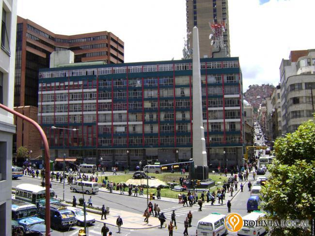 |
La Plaza del Obelisco está ubicada en la avenida Mariscal Santa Cruz. Aquí se encuentra el Monumento al "Soldado desconocido" en homenaje a los cientos de soldados caídos en la Guerra del Chaco, entre nuestro país y el Paraguay (1932 - 1935). Este es un punto de encuentro por su ubicación estratégica en el centro de La Paz. | 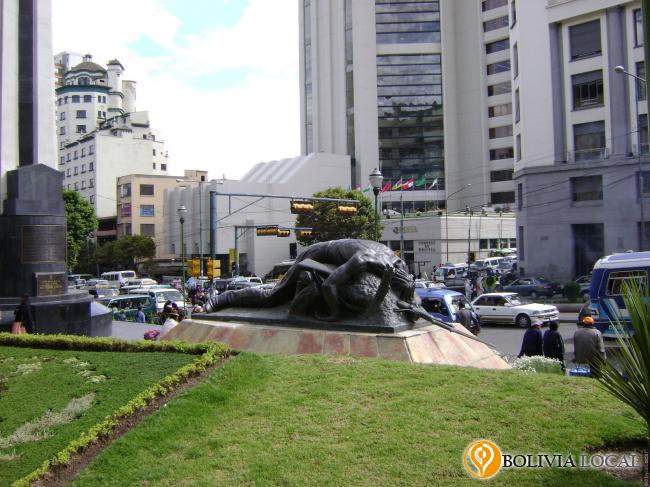 |
| 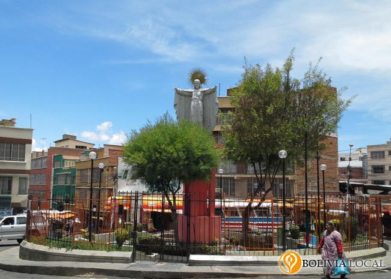 |
La Plaza Señor Jesús del Gran Poder es una pequeña plaza circular que se encuentra en la zona Gran Poder, una de las zonas más comerciales que hay en la ciudad de La Paz, cerca de este lugar se encuentran varias entidades financieras, peluquerías, tiendas de abarrotes, carnes y verduras, tambos de frutas y otros. | 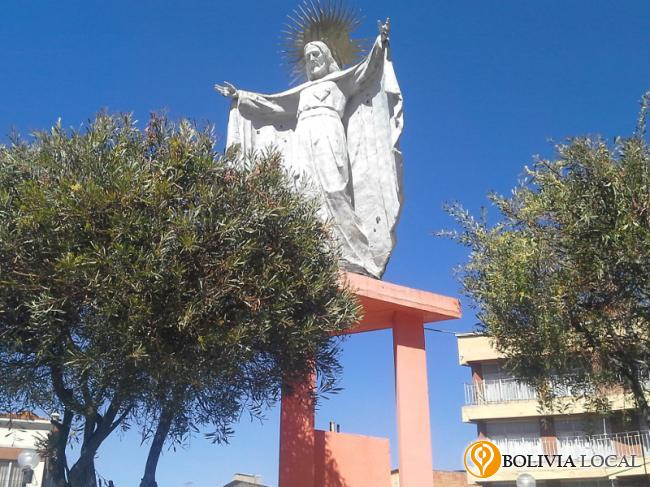 |
| 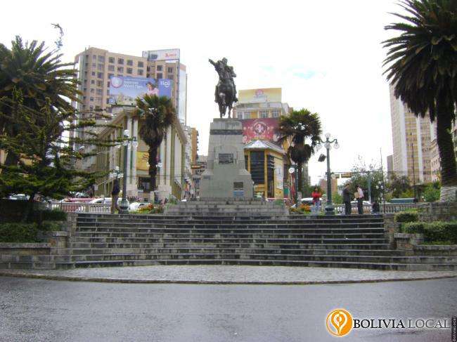 |
La Plaza del Estudiante se encuentra ubicada finalizando el paseo del Prado, esta plaza tiene la una forma circular en la que coinciden varias calles y en su centro se halla el monumento al Mariscal de Ayacucho Antonio José de Sucre. Por su ubicación es un punto de referencia importante para la ciudad. Desde este lugar se puede ubicar el Ministerio de Salud, el Prado, la Biblioteca Municipal, la Universidad Mayor de San Andrés y la Plaza de Bicentenario. | 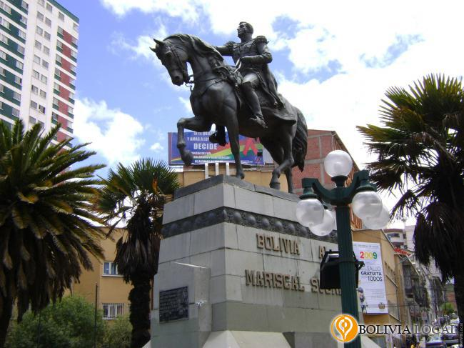 |
| 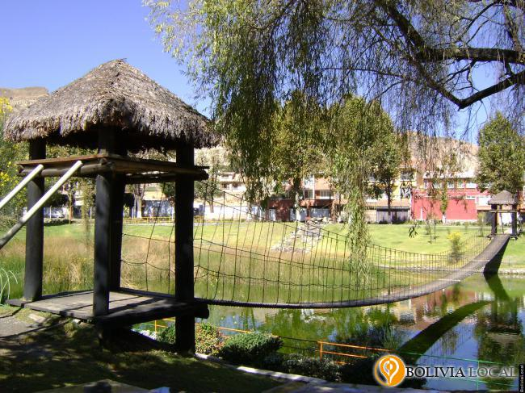 |
El parque laguna de Cota Cota está ubicado en la calle 30 de Cota Cota, es uno de los más grandes de la ciudad de La Paz, según datos de Emaverde tiene una superficie de 12300 metros cuadrados. En este parque encontramos una laguna con peces y patos, juegos acuáticos, un puente colgante, ciclovía, áreas de juegos para niños, adultos, áreas verdes y parrilleros para disfrutar de un agradable día de campo con la familia. | 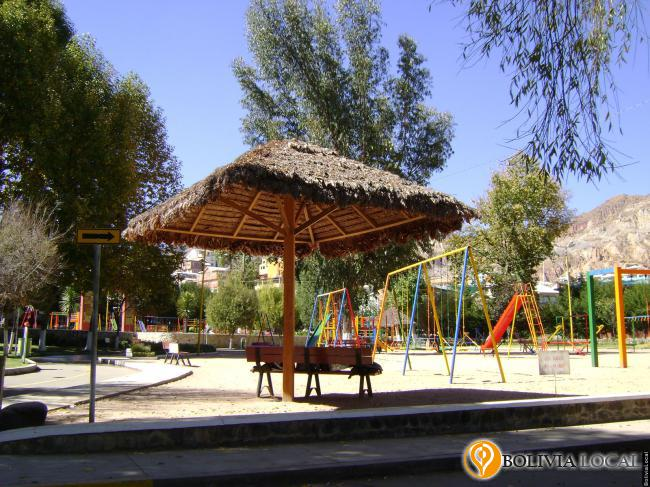 |
| 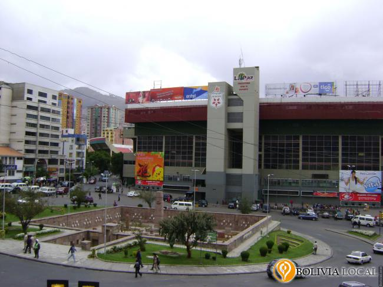 |
La Plaza del Estadio, Plaza Tejada Sorzano, se encuentra ubicada en el barrio de Miraflores al frente del Estadio Olímpico Hernando Siles. En esta plaza se encuentra una réplica del templete semi-subterráneo del complejo arqueológico de Tiwanacu. Imitando al original que expone cabezas incrustadas en piedra pero moldeadas en cemento y en el centro del templete se halla una réplica del Monolito Benett. | 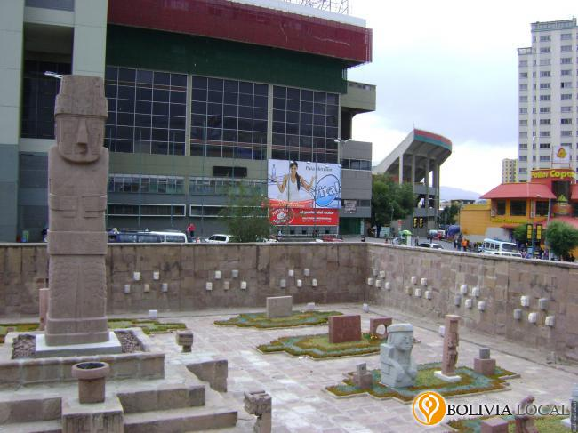 |
| 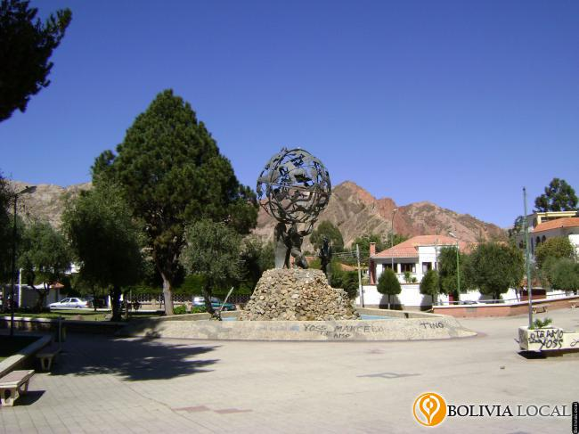 |
Esta plaza se encuentra ubicada entre la calle 8 y la avenida Arequipa, ingresando a los barrios de Calacoto y La Florida. Se constituye en uno de los espacios públicos más conocidos de la ciudad de La Paz. En este lugar en ocasiones se instalan distintas ferias y los fines de semana se pueden encontrar exposiciones, venta de objetos como pinturas y algo de artesanía. En los alrededores de este punto también encontraremos áreas de recreación para la familia como el conocido parque de las Cholas. | 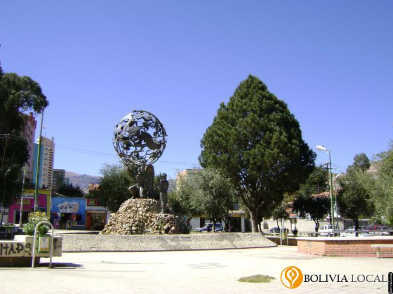 |